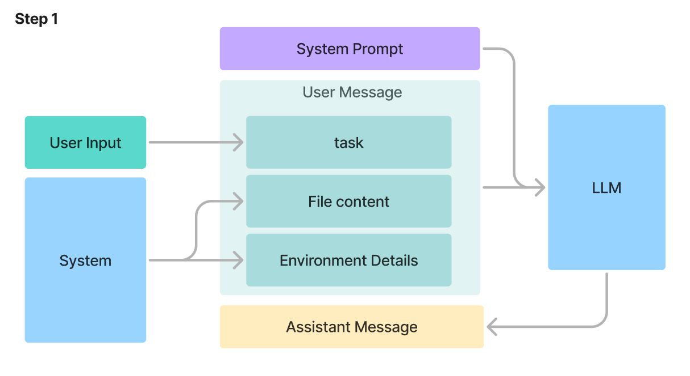
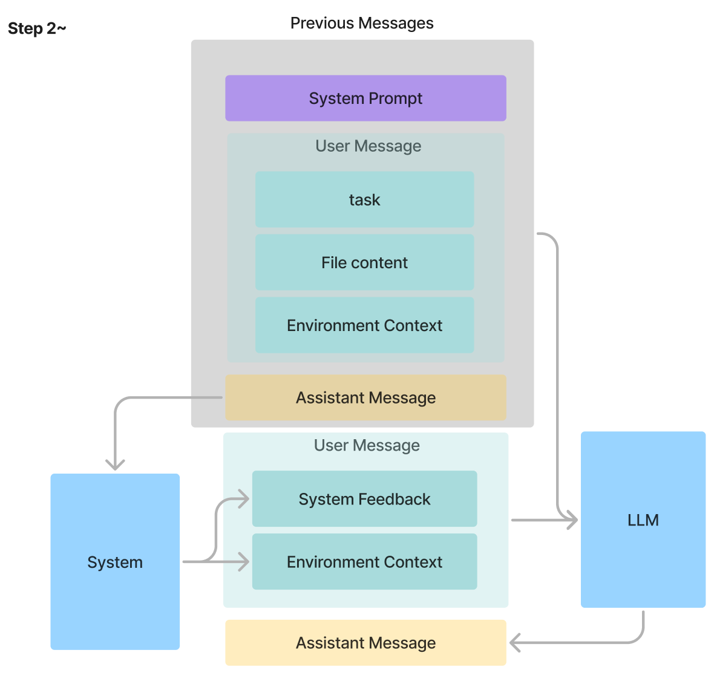
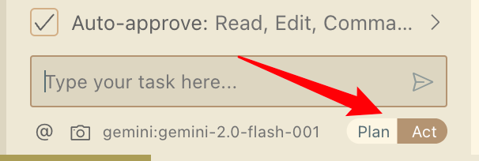

Cline - AIのコーディングアシスタントの仕組みを徹底解説
TL;DR
Clineのソースコードを読んでわかったこと：
- XML形式でツールを呼び出している。
- ユーザーが入力する際、VSCodeの状態もLLMに送信される。
- メッセージの履歴は要約せずに使用し、長くなった場合は古いメッセージを削除する。
- ファイルを修正する際、全体を再生成するのを避けるため、置換ツールを使用している（Speculative Decodingは未使用）。
- System Messageが長いことが、指令を聞かない理由の一つかもしれない。
- Agentがツールを正しく使用していない場合、LLMにツールの使い方をリマインドするフィードバックを送る。
- Embedding検索は使用していない。メンションでフォルダーを指定する際、
@pathを使うと直下のすべてのファイルがメッセージに含まれる。
Clineとは？
ClientはLLMを活用した開発者支援ツールです。開発者向けの支援ツールです。オープンソース版の「Cursor」とも呼ばれ、Cursorと比較して以下の3つの特徴を持っています。
オープンソース
Clineはオープンソースソフトウェアであり、誰でもその内部構造を確認したり、カスタマイズしたりできます。これにより、透明性と柔軟性が確保されています。VSCodeプラグイン Cursorが独立したエディターであるのに対し、ClineはVisual Studio Code（VSCode）のプラグインとして動作します。これにより、既存のエディター環境を変更せずに開発をすることができます。
料金体系 Cline自体は無料で利用可能です。使用するAIプロバイダーのAPI料金のみが発生するため、例えばGoogleのGemini Flash 2.0を利用すればコストをかけずに使えます。
Clineが提供する主な機能は以下の通りです。
プロジェクト内のファイルを編集および作成
ターミナルコマンドの実行
コードの検索と分析
デバッグと問題の修正支援
ルーチン作業の自動化
外部ツールとの統合
これらの機能がどのように実現されているのか、具体的な処理の流れを通して見ていきましょう。
Clineの処理の全体像
Clineの処理は、初回のステップと2回目以降の処理に分かれます。ここでは、例としてREADME.md ファイルを編集するケースを挙げて、その動作を詳しく説明します。
最初のステップ
最初のステップのフロー図はこちらです。

ユーザーのインプットは以下です。
@/temp/README.md give me a sample README.mdこの入力により、生成されたUser Messageは以下になります。
<task>
'temp/README.md' (see below for file content) give me a sample README.md
</task>
<file_content path="temp/README.md">
This is a example title
</file_content>
<environment_details>
# VSCode Visible Files
temp/README.md
# VSCode Open Tabs
temp/README.md
# Current Time
3/4/2025, 3:54:45 PM (Asia/Tokyo, UTC+9:00)
# Current Working Directory (/Users/Downloads/tmp) Files
No files found.
# Current Mode
ACT MODE
</environment_details>その中には三つのセクションがあります。
- <task>: ユーザーがインプットしたテキストそのもの
- <file_content>: ユーザーがメンションしたファイルの内容。システムから取得する。
- <environment_details>: 現時点のシステムの情報。詳細としては
- VSCode Visible Files: 現在VSCodeで見えているファイル
- VSCode Open Tabs: 現在VSCodeで開いているタブ
- Current Time: 現在の時間
- Current Working Directory Files: 現在の作業ディレクトリのファイル
- Current Mode: 現在のモード, ACT MODEかPLAN MODEか（後ほど説明します）
このUser MessageはSystem Prompt（後述）と一緒にLLMに送信され、LLMが以下のAssistant Messageを生成します。
<write_to_file>
<path>temp/README.md</path>
<content>
# Project Title
(中略)
Project Link: [https://github.com/yourusername/yourproject](https://github.com/yourusername/yourproject)
</content>
</write_to_file>これはClineの中のツールの利用規約です。Clineの中ではXML形式でツールを呼びことになっています。形式は以下です：
<tool_name>
<parameter1_name>value1</parameter1_name>
<parameter2_name>value2</parameter2_name>
...
</tool_name>上記のメッセージはwrite_to_fileのツールをコールし、pathとconetenの二つのパラメータを渡しています。
ステップ２以降の処理
次のフロー図はこちらです。

システムは、LLMが生成したAssistant Messageを解析し、指定されたツール（この場合はwrite_to_file）を実行します。実行結果はSystem FeedbackとしてLLMに返されます。以下は今回の例での実際のフィードバックです。
[write_to_file for 'temp/README.md'] Result:
The content was successfully saved to temp/README.md.
Here is the full, updated content of the file that was saved:
<final_file_content path="temp/README.md">
# Project Title
A brief description of what this project does and who it's for.
(中略)
Project Link: [https://github.com/yourusername/yourproject](https://github.com/yourusername/yourproject)
</final_file_content>
IMPORTANT: For any future changes to this file, use the final_file_content shown above as your reference. This content reflects the current state of the file, including any auto-formatting (e.g., if you used single quotes but the formatter converted them to double quotes). Always base your SEARCH/REPLACE operations on this final version to ensure accuracy.このフィードバックには、実行結果に加えて、更新されたファイルの完全な内容（<final_file_content>）が含まれます。また、過去の会話履歴やその時点の環境情報も同時にLLMに返され、LLMはこれをもとに次のAssistant Messageを生成します。このプロセスがループし、タスクが完了するまで続きます。
中止条件
上記のループの中止条件としては、LLMの方が<attempt_completion>を返すことです。例えば、この例では、Step2の方でLLMがすでに必要なファイルを生成したため、<attempt_completion>を返しました。以下は実際の結果です。
<attempt_completion>
<result>
The `README.md` file has been successfully updated with a sample template. This template includes sections for project title, installation instructions, usage examples, contribution guidelines, license information, and contact details. You can customize these sections to fit the specific needs of your project.
</result>
</attempt_completion>これで、Clineの処理の全体像について説明しました。次にまで触れてない細かい部分について一個一個説明していきます。
Tools
Clineは、ツールを利用可能なLLM（エージェント）として動作します。利用できるツールは、「デフォルトツール」と「MCP（Model Context Protocol）」によって提供されるツールの2種類に分類されます。
MCP
MCPは2024年11月にAnthropicが提唱した様々なデータソースやツールと連携できるオープンプロトコルのことです。名前がややこしいですが、ユーザーがカスタマイズできるツールと理解すれば良いです。
access_mcp_resource(MCPリソースアクセス)use_mcp_tool(MCPツール使用)
この二つのツールは名前の通り、access_mcp_resource はMCPリソースへアクセスするリクエストするツールで、 use_mcp_tool はMCPツールを使用するリクエストするツールです。MCPのリソースとツールはユーザーが自由に追加できるため、Clineの機能を拡張することができます。
Default Tools
重点はデフォルトツールです。以下はツールの一覧です。ちなみに、Default Toolsの定義はSystem Promptで確認できます。
ファイル操作系
read_file(ファイル読み込み)write_to_file(ファイル書き込み)replace_in_file(ファイル内置換)search_files(ファイル検索)list_files(ファイル一覧表示)
その他の操作系
execute_command(コマンド実行)list_code_definition_names(コード定義名一覧表示)browser_action(ブラウザ操作、Compute useをサポートするモデルのみ使える)
タスク制御系
ask_followup_question(追跡質問)attempt_completion(完了試行)plan_mode_response(計画モード応答)
ツールが結構多いので、一部抜粋して説明します。
replace_in_file
ファイル操作系の中で面白いのはreplace_in_fileです。これは、ファイル内の文字列を置換するツールです。ファイルの一部を編集する際に使用できるため、トークン数を節約できます。かなり詳細なルールを指定し、正しく動作させるために相当苦労したように思います。実際の動作を確認すると、置換が失敗する例をよく見かけます。以下はその説明の和訳です。
説明: 既存のファイル内のコンテンツの特定部分を、SEARCH/REPLACE ブロックを使用して置換するリクエスト。このツールは、ファイル内の特定の部分に対して、的を絞った変更を加える必要がある場合に使用します。SEARCH/REPLACE ブロックは、ファイル内の特定部分に対する正確な変更を定義します。
パラメータ:
path: (必須) 変更するファイルのパス (現在の作業ディレクトリからの相対パス)。
diff: (必須) 以下の正確なフォーマットに従った、1つ以上の SEARCH/REPLACE ブロック:<<<<<<< SEARCH [検索する正確な内容] ======= [置換する新しい内容] >>>>>>> REPLACE重要なルール:
- SEARCH の内容は、検索対象となるファイルのセクションと正確に一致する必要があります。
- 空白、インデント、改行を含む、文字単位で一致させること。
- すべてのコメント、ドキュメンテーション文字列などを含めること。
- SEARCH/REPLACE ブロックは、最初に一致した箇所のみを置換します。
- 複数の変更を行う必要がある場合は、複数のユニークな SEARCH/REPLACE ブロックを含めること。
- 変更が必要な各行のセットを一意に識別するために、各 SEARCH セクションには十分な行を含めてください。
- 複数の SEARCH/REPLACE ブロックを使用する場合は、ファイル内での出現順にリストしてください。
- SEARCH/REPLACE ブロックは簡潔に保つこと:
- 大きな SEARCH/REPLACE ブロックは、ファイルの小さな部分をそれぞれ変更する一連の小さなブロックに分割してください。
- 変更する行と、一意性を確保するために必要な場合は周囲の数行だけを含めてください。
- SEARCH/REPLACE ブロックに、変更のない長い行を含めないでください。
- 各行は完全である必要があります。 途中で行を切り捨てないでください。マッチングの失敗につながる可能性があります。
- 特別な操作:
- コードを移動する場合: 2つの SEARCH/REPLACE ブロックを使用します (1つは元の場所から削除するため、もう1つは新しい場所に挿入するため)。
- コードを削除する場合: 空の REPLACE セクションを使用します。
他のツールについて、タスク制御系の三つのツール以外は大体名前を見れば何をしているかがわかるので、タスク制御系の三つのみ説明を和訳して載せます。
ask_followup_question
説明: タスクを完了するために必要な追加情報を収集するためにユーザーに質問をすること。このツールは、曖昧さに直面した場合、明確化が必要な場合、または効果的に進行するために詳細が必要な場合に使用されるべき。ユーザーとの直接コミュニケーションを可能にすることで、対話的な問題解決を可能にします。必要な情報を収集しつつ、過度な往復を避けるために慎重にこのツールを使用してください。
パラメータ:
- question: (必須) ユーザーに尋ねる質問。必要な情報に対応する明確で具体的な質問であるべき。
ツールの説明の和訳は以上です。これは、ユーザーに質問して情報を収集するツールです。ユーザーの指示が曖昧な場合や、認証用のキーが必要な場合に、このツールを使ってユーザーとコミュニケーションを取ることができます。また、複数回失敗した場合にも、これを利用してユーザーに助けを求めることがあります。
attempt_completion
説明: 各ツールを使用した後、ユーザーはその結果（成功または失敗）および失敗の理由を応答する。ツールの使用結果を受け取り、作業が完了したことを確認できた場合、このツールを使用して結果を提示する。オプションとして、作業結果を示すCLIコマンドを提供することもできる。ユーザーが結果に満足しない場合、フィードバックを返すことがあり、それを基に改善し、再試行することが可能である。
重要な注意: 本ツールを使用する前に、以前のツールの使用が成功したことをユーザーから確認したかどうかをタグ内で自問しなければならない。確認が取れていない場合、本ツールを使用してはならない。これを怠ると、コードの破損やシステム障害を招く恐れがある。
パラメータ
result（必須）: タスクの最終結果を示す。結果は確定的なものであり、ユーザーからのさらなる入力を必要としないように記述すること。結果を質問形や支援の申し出で終わらせることは避けるべし。
command（任意）: 作業結果のライブデモを示すためのCLIコマンド。
このツールの利用はプロセスの終了条件となるため、Agentがプログラムを終了したい場合は、必ずこのツールを呼び出されます。逆に、このツールを呼び出さずに終了しようとするとエラーが発生し、「もう一度考えて」とClineからLLMに送信されます。メッセージの制御については後ほど説明します。
plan_mode_response
説明: ユーザーの問い合わせに応じ、ユーザーのタスクに対する解決策を計画するための応答を行う。このツールは、ユーザーの質問や発言に対して、どのようにタスクを達成するかの計画を提示する必要がある場合に使用する。なお、このツールはPLAN MODEのときのみ利用可能であり、現在のモードはenvironment_detailsに記載されている。PLAN MODEでない場合は使用してはならない。
ユーザーのメッセージ内容に応じて、リクエストに関する詳細を尋ねたり、タスクの解決策を設計したり、ユーザーとアイデアをブレインストーミングすることが可能である。例えば、ユーザーのタスクがウェブサイトの作成である場合、いくつかの確認の質問を行った後、与えられた条件に基づいてタスクを達成するための詳細な計画を提示し、ユーザーとやり取りを行って詳細を確定させることが考えられる。その後、ユーザーがACT MODEへ切り替えた際に、計画を実行に移す。
パラメータ:
• response: (必須) ユーザーに提供する応答。このパラメータ内でツールを使用してはならず、単なるチャット応答として扱う。

インプットウィンドウ内にPlanとActのモードを切り替えるボタンがあります。しかし、ソースコードを読む限り、この二つのモードに仕組み上の大きな違いはありません。唯一の違いは、Planモードではplan_mode_responseが使用できる点です。一方、Actモードでも通常の<thinking>...</thinking>の形式で思考を行うため、手動でモードを切り替えてまでplan_mode_responseをLLMに使わせるメリットは感じられません。基本的にActモードを常駐させれば十分だと考えます。
以下はSystem Promptから抜粋した定義です。興味のある方はご覧ください。
ACT MODEとPLAN MODE
各ユーザーメッセージにおいて、environment_detailsで現在のモードが指定されます。モードは2種類あります。
ACT MODE：このモードでは、plan_mode_responseツールを除くすべてのツールにアクセスできます。
ACT MODEでは、ツールを使用してユーザーのタスクを完了させます。ユーザーのタスクが完了したら、attempt_completionツールを使用してタスクの結果をユーザーに提示します。
PLAN MODE：この特別なモードでは、plan_mode_responseツールにアクセスできます。
PLAN MODEでは、タスクを達成するための詳細な計画を作成するために、情報を収集し、コンテキストを取得することが目標です。ユーザーは、あなたが解決策を実行するためにACT MODEに切り替える前に、この計画を確認し、承認します。
PLAN MODEでは、ユーザーと会話したり、計画を提示したりする必要がある場合、<thinking>タグを使用していつ応答するかを分析するのではなく、plan_mode_responseツールを使用して直接応答を配信する必要があります。plan_mode_responseの使用について言及しないでください。考えを共有し、役立つ回答を提供するために、直接使用してください。
PLAN MODEとは？
通常はACT MODEですが、ユーザーはタスクを最適に達成する方法を計画するために、PLAN MODEに切り替えることがあります。
PLAN MODEで開始する場合、ユーザーのリクエストに応じて、タスクに関するより多くのコンテキストを取得するために、read_fileやsearch_filesなどを使用して情報収集が必要になる場合があります。また、タスクをより深く理解するために、ユーザーに明確化のための質問をすることもできます。理解を視覚的に表示するために、mermaidダイアグラムを返すこともできます。
ユーザーのリクエストについてより多くのコンテキストを得たら、タスクを達成するための詳細な計画を設計する必要があります。ここでもmermaidダイアグラムを返すことが役立つ場合があります。
次に、ユーザーにこの計画に満足しているかどうか、または変更を加えたいかどうかを尋ねます。これは、タスクについて話し合い、最適な実行方法を計画するブレインストーミングセッションと考えてください。
計画をユーザーが構造をすばやく理解できるように、mermaidダイアグラムを使用すると計画がより明確になる場合は、応答にMermaidコードブロックを含めることをお勧めします。（注：mermaidダイアグラムで色を使用する場合は、テキストが読みやすくなるように、コントラストの高い色を使用してください。）
最後に、良い計画に到達したと思われる場合は、解決策を実行するためにACT MODEに戻すようにユーザーに依頼してください。
System Prompt
System Promptはいくつかのセクションがあり、非常に長いので、ここでは各セクションの内容を一言でまとめます。
Capabilities: 提供されたツールの説明と、エージェントがそれらのツールをどのように使用して、ユーザーのタスクを達成できるかについての概要。
Tool Use: エージェントが利用できるツールのリストと、各ツールの使用方法に関する詳細な説明。XML形式でのツールの使い方、各パラメータの説明も含む。
Tool Use Examples: 各ツールの使用例をXML形式で示す。
Tool Use Guidelines: ツール使用のステップ、ツール使用後のユーザーからのレスポンスの重要性、反復的な問題解決のアプローチについて。
Editing Files:
write_to_fileとreplace_in_fileツールの使い分けと、それぞれのツールの適切な使用状況、自動フォーマットに関する考慮事項について。ACT MODE V.S. PLAN MODE:
ACT MODEとPLAN MODEの違い、それぞれのモードで利用可能なツール、PLAN MODEでの計画策定プロセスについて。MCP Servers: MCP (Model Context Protocol) サーバーの概要と、接続されたサーバーが提供するツールとリソースの使用方法。MCPサーバーの作成例を含む詳細な説明。
Rules: エージェントが従うべきルール。現在の作業ディレクトリ、コマンド実行時の注意点、ファイル検索や変更時の注意点、対話に関する制限など。
System Information: ユーザーのオペレーティングシステム、デフォルトシェル、ホームディレクトリ、現在の作業ディレクトリに関する情報。
Objective: ユーザーのタスクを達成するための段階的なアプローチ、ツールの使用方法、問題解決プロセスについて。
USER’S CUSTOM INSTRUCTIONS: ユーザーによって提供される追加の指示。
ここで注目すべきのは、最後のユーザー指示です。つまり、System Promptの中で、ユーザーの意思を入れることができます。
懸念点としては、プロンプト自体が長すぎることです。GPT-4oのトークナイザーでカウントしたところ、4658トークンでした。これほど長く複雑な指示を与えた場合に、どの程度指示通りに動作するかが疑問です。実際に試したところ、指示を遵守しないケースが見られました。幸い、Clineの制御がしっかりしているため、遵守しなくても問題は発生しませんでした。
ユーザーメッセージ
LLMから出力したメッセージを解析した後、システムで実行した結果をLLMにフィットバックする必要があります。各条件にLLMへのリスポンスを以下のように定義されています。
toolDenied:
toolError:
clineIgnoreError:
{path} へのアクセスは .clineignore ファイルの設定によってブロックされています。このファイルを使用せずにタスクを続行するか、ユーザーに .clineignore ファイルの更新を依頼してください。noToolsUsed:
tooManyMistakes:
toolResult:
- 画像がない場合: {text}
- 画像がある場合: {text} と {images}を結合した配列
formatFilesList:
- ファイル数上限に達した場合: {ファイルリスト}(ファイルリストが切り詰められました。さらに探索する必要がある場合は、特定のサブディレクトリで list_files を使用してください。)
- ファイルがない場合: ファイルが見つかりません。
- それ以外: {ファイルリスト}
また、上記の条件の中で、noToolsUsedとmissingToolParameterErrorの二つの状況について、上記のメッセージ以外にReminder: Instructions for Tool UseをタイトルとしたTool Useの使い方をリマインドするメッセージも最後に追加されます。
その他
Clineの主要部分については上記で説明しましたが、その他の細かな点について本章でまとめます。
Context Window超過時の動作
普段から1MのContext Windowを持つGemini Flash 2.0を使用しているため、Context Windowの制限をあまり意識していませんでしたが、他のモデルを使用している場合はContext Windowを超過しやすいです。その場合、Clineは単純に古いメッセージを捨てています。 コードの中にこのようなコメントがあります：
If a user reaches a 200k context, we can assume that the first half is likely irrelevant to their current task.
つまり、200kのContext Windowを超えた場合、最初の半分は現在のタスクとは関係がないと仮定しているようです。少々乱暴な仮説と言わざるを得ません。せめて省略した部分を要約して返すなどの対応が望ましいと考えられます。
実際の動作としては、最初のメッセージ、つまりユーザーからの直接のインプットのみを残し、2回目以降のメッセージは削除されます。
メンションの動作
「@src/index.tsを修正してください」のようにファイルなどをメンションして、LLMに指示を出すことができます。それがサポートされている形式を以下の表にまとめました。
| Mention | Messageに追加される情報 |
|---|---|
@/path/to/file |
|
@/path/to/directory/ |
|
@problems |
|
@terminal |
|
@http://example.com |
|
@git-changes |
|
@a1b2c3d |
|
メンション機能は便利ですが、大量のファイルを含むフォルダをメンションすると、コンテキストウィンドウがすぐに埋まってしまうため、注意が必要です。
Cline の改善点
ソースコードの分析から見つかった改善点を以下にまとめます。
Embedding 検索の未活用: 現状の Cline では、LLM へのファイル連携はファイル名やファイル全体を LLM に渡す形で行われています。Embedding を利用した検索を導入することで、より効率的なファイル連携が可能になる可能性があります。
入力圧縮方法の改善: Context Window のサイズを超過しそうな場合、古いメッセージを単純に削除するのではなく、要約処理を挟むなど、より洗練された方法で入力情報を圧縮するべきです。
トークン消費量の最適化: 上記の2点 (Embedding の活用、入力圧縮方法の改善) に関連しますが、現状ではトークン消費量が非常に多いと感じられます。特に、Gemini Flash 2.0 ではなく、Claude のような高性能モデルを使用する場合、コストが大きな課題となります。
System Prompt の最適化: 現在の System Prompt は非常に長く複雑です。これにより、指示が適切に反映されない可能性があります。チューニングの結果であることは理解していますが、よりシンプルかつ効果的な System Prompt を検討する必要があります。
コマンドライン実行のリスク管理: LLM が承認した場合、ユーザーに確認を求めた上でコマンドが実行されますが、この仕組みは完全ではありません (Fool-proof ではない)。LLM が
rm -rf /のような危険なコマンドを誤って承認した場合、自動的に実行されてしまうリスクがあります。機械的なリスク検出方法を導入するなど、より安全な仕組みを構築する必要があります。 (あるいは、重要なコマンドは、確認ダイアログを出すなど)